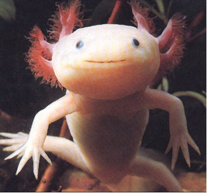

Congratulations! By solving each puzzle, you've successfully saved the ocean!

A happy axolotl!
The animals thank you dearly for your efforts.
Isabel, I really hope you enjoyed these puzzles. I tried to find interesting problems that alluded to neat general results; hopefully everything seemed fun to you (at the very least, trying to come up with the problems was fun for me, especially since it meant I had an excuse to think about you). With the exception of the password hacking puzzle (I absolutely could not resist including some sort of computer hacking themed puzzle seeing as your a computer science genius and this is a website), I included short notes on the win pages for each puzzle mentioning a generalization of the puzzle; all of the generalizations are theorems I personally consider interesting, so hopefully there are some results you were unaware of that you can try solving in general.
I really, really love you, Isabel. You've made me so much happier these past few months, and have really made me feel better about myself. On November 11th, I asked you out for the first time; our first date was on the 14th, exactly 3 months ago from Valentines day. I'm so, so happy with how everything's turned out since then with you, Isabel. Your texts make me feel happier every day. The highlight of each week for me is the time on the weekend that I get to spend with you. I love looking through our old texts, looking at my photo of you, or thinking about the times we've spent together whenever I need to feel happier during the week. You're just incredible, Isabel.
It's really difficult to try and describe how happy you've made me with some text in a p tag, but the next time we get to see each other, I'll be sure to give you a good squeeze that can hopefully communicate everything I can't type.
Happy Valentine's day, i2. I hope you enjoyed it.
(By the way, Max Mudpuppy's real password is mudpuppiesrule)